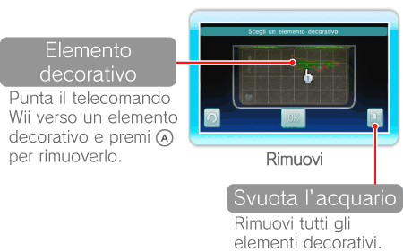

15 |
Impostazioni |
 |
|
Punta il telecomando Wii verso
Modifica il tipo e il numero di pesci con cui popolare l’acquario. Il numero è limitato e dipende dalle dimensioni del pesce. Seleziona OK per confermare le scelte effettuate.
Punta il telecomando Wii verso un blocco contenente uno o più pesci e premi Punta il telecomando Wii verso
Puoi spostare e cambiare gli oggetti di contorno presenti nell’acquario, come radici e pietre. Seleziona OK per confermare le scelte effettuate. La vegetazione viene aggiunta automaticamente. 
Punta il telecomando Wii verso un elemento decorativo e premi  per sollevarlo. Punta il telecomando Wii verso la parte dell’acquario in cui vuoi posizionarlo e premi per posarlo. Usa per sollevarlo. Punta il telecomando Wii verso la parte dell’acquario in cui vuoi posizionarlo e premi per posarlo. Usa Nota: se i blocchi verso cui stai puntando il telecomando Wii assumono colore rosso, non c’è spazio sufficiente per posare l’elemento decorativo in quella parte dell’acquario.
Seleziona  |
 |
 |
 |